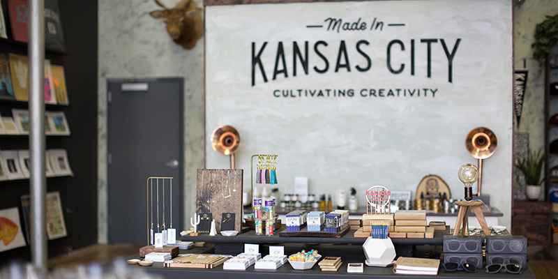

From craft goods and luxury retailers to antique picking and one-of-a-kind souvenirs, there’s no shortage of unique shopping options available in KC.
With a maker culture that’s constantly on the rise, it’s clear that Kansas City takes pride in locally made goods.
Letterpress shops like Hammerpress create prints that dazzle while retailers like Made in Kansas City keep people well-supplied with everything from décor and kitchen necessities to apparel and jewelry—all in partnership with local makers and doers.
One of the most popular neighborhoods in the metro is also one of KC’s best for shopping. Head to Country Club Plaza for everything from luxury brands to chic boutiques.
| Name | Commodity | Location |
|---|---|---|
| Hammerpress | Custom Typesetting and Prints | Downtown |
| Made In KC | Curator of Custom Work from over 300 local artisans | Downtown |
| Kansas City Canning Company | Boutique Canning & Supply Shop | Plaza |
| 5B & Co. Candlemakers | Aromatic & Hard Poured Candles | Brookside |
| Belger Arts Center | Art Gallery | Crossroads District |